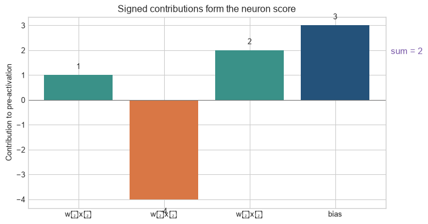

Chapter 4 described a network as a chain of small computations through which values move forward and gradients move backward. We now need one concrete computation to place in that chain. An artificial neuron takes several input values, gives each a learned weight, adds a learned baseline, and returns one score.
The name is historical, not biological. A modern artificial neuron is a compact mathematical operation. Its importance is that the same operation can be repeated, trained jointly, and arranged into the layers examined in the next chapter.
The running calculation
We will use three standardised input features from the programme-uptake example introduced in Chapter 1:
\[
x=(x_1,x_2,x_3)=(2,4,1).
\]
The values are deliberately abstract because they have been standardised. They might represent transformed measures of distance, previous participation, and access to information. The neuron uses weights
\[
w=(0.5,-1,2)
\]
and bias \(b=3\). The example explains the computation; the weights should not be interpreted as causal effects.
Artificial neuron. A unit that forms a weighted sum of input values, adds a bias, and may pass the result through an activation function. The weighted sum is an affine calculation; non-linearity enters only when an activation is applied. A neuron’s weights are parameters, but not every model parameter is a connection weight.
Level 1 - Intuition
The diagram should be read as an arithmetic recipe. Each input is multiplied by its own weight; those signed contributions are added with the bias; the resulting score is passed on. The arrows are not claims that one observed feature causes an outcome.
Inputs do not contribute equally
A prediction model may use several features, but there is no reason to assume that each feature contributes equally or in the same direction. A weight records how strongly one input contributes to the neuron’s current score. A positive weight raises the score when the input increases; a negative weight lowers it. A weight near zero makes the input contribute little to this neuron.
Figure 6.1: A neuron weights several inputs, combines them, and produces one output.
The arrows encode the weights. Their labels give the sign and magnitude of each contribution. The neuron does not inspect the substantive meaning of the features; it multiplies values, adds the results, and applies a fixed activation rule. Any substantive interpretation must come from the problem definition, data, and evaluation outside this operation.
The bias sets a baseline
The bias contributes even when every input equals zero. It shifts the neuron’s score and therefore changes where an activation function switches behaviour. In a binary decision, this resembles changing a threshold while holding the feature weights fixed. The analogy is approximate because many neural-network activations do not produce a hard decision.
The bias should not be interpreted in isolation. Its numerical meaning depends on the feature representation. If inputs are centred and scaled, zero may represent an average transformed case; if inputs are raw counts, zero may be an observed boundary or an implausible combination. The computation always includes the bias, but substantive interpretation requires knowing what the input coordinates mean.
One neuron does not contain an explanation
A weight tells us how one input enters one fitted computation. It does not establish that changing the input would change the outcome, and its meaning can depend on feature scaling and the other layers of the network. In a deep network, useful representations are distributed across many units. Inspecting one neuron rarely provides a complete account of the model’s prediction.
Code
contribution_labels=["w₁x₁","w₂x₂","w₃x₃","bias"]contribution_values=np.array([1.,-4.,2.,3.])fig,ax=plt.subplots(figsize=(7.7,4.1))bar_colours=[teal,orange,teal,blue]ax.bar(contribution_labels,contribution_values,color=bar_colours)for i,value inenumerate(contribution_values): ax.text(i,value+(.18if value>=0else-.34),f"{value:.0f}",ha="center",va="bottom"if value>=0else"top")ax.axhline(0,color="#777777",linewidth=.8); ax.text(3.65,1.85,"sum = 2",color=purple,fontsize=11)ax.set(ylabel="Contribution to pre-activation",title="Signed contributions form the neuron score")plt.tight_layout(); plt.show()

Figure 6.2: The neuron’s pre-activation is the sum of signed weighted input contributions plus the bias; a large input does not necessarily make the largest contribution.
The second input has the largest magnitude and a negative weight, so it lowers the score by four. The diagram makes a limited computational claim: these values combine to form \(z\). It does not establish that the second underlying feature is harmful, important in every context, or causally related to the target.
One neuron gives one score. To reproduce that score, we need to distinguish the inputs, the learned weights, the bias, and the pre-activation before an activation function changes its shape. The next level performs that calculation in order.
Level 2 - Mechanics
The five operations
For one observation, a neuron performs five steps:
receive the input values;
multiply each input by its weight;
add the weighted contributions;
add the bias to obtain the pre-activation \(z\);
apply an activation function \(g\) to obtain \(a=g(z)\).
The running example makes each step visible:
Input
Value \(x_j\)
Weight \(w_j\)
Contribution \(w_jx_j\)
\(x_1\)
2
0.5
1
\(x_2\)
4
-1
-4
\(x_3\)
1
2
2
The weighted contributions sum to \(1-4+2=-1\). Adding the bias gives:
\[
z=-1+3=2.
\]
The number 2 is the pre-activation. It is the neuron’s linear output before the activation function is applied.
One rule can be applied to a batch without changing its meaning
The running calculation uses one vector and one scalar output. For a batch, the same weight vector and bias are applied to each row of inputs. A batch of shape \(B\times p\) therefore produces one pre-activation and one activation for each of its \(B\) observations. The parameter shapes do not grow with batch size; only the number of computations and stored activations does.
Code
batch=np.array([[2.,4.,1.],[0.,1.,3.],[-1.,2.,2.]])weights=np.array([.5,-1.,2.]); bias=3.batch_z=batch@weights+biasbatch_a=np.maximum(0,batch_z)print("input batch shape:",batch.shape)print("shared weight and bias shapes:",weights.shape,np.asarray(bias).shape)print("pre-activations:",batch_z)print("ReLU activations:",batch_a)
The three outputs come from three observations, not three different neurons. Chapter 6 generalises this step by placing several weight vectors in one matrix so that a layer can produce several outputs per observation.
How the bias changes a boundary
For two inputs and no activation, values with the same pre-activation satisfy:
\[
w_1x_1+w_2x_2+b=c.
\]
For a binary threshold at \(z=0\), the decision boundary is \(w_1x_1+w_2x_2+b=0\). Changing \(b\) moves the boundary without changing its slope.
Figure 6.3: Changing the bias shifts a linear decision boundary while leaving its orientation unchanged.
The three lines are parallel because the weights are unchanged. Their positions differ because the bias changes the score assigned to every point. This is why the bias is a learned parameter rather than a cosmetic addition.
The activation changes what is passed forward
If the neuron uses the rectified linear unit, or ReLU,
\[
g(z)=\max(0,z),
\]
the running example produces \(a=2\). A pre-activation of \(-2\) would produce \(a=0\). The activation therefore changes the information passed to the next layer and changes how gradients flow backwards.
A neuron during training
The forward pass calculates \(z\) and \(a\). The loss compares the eventual network output with the target. Backpropagation calculates gradients for the weight and bias, and the optimiser updates them. The inputs are data; the weights and bias are parameters. The activation function usually has a fixed form, although some architectures use activations with learned parameters.
The calculation makes the unit inspectable, but the notation is still useful because the same operation must be applied to many observations and later to many output units. The mathematics and code below express that repeated computation compactly.
Level 3 - Mathematics & Code
The mechanics can now be written compactly. This level introduces each symbol, checks the arithmetic manually, implements the same operation in PyTorch, and shows why nonlinearity is required between layers.
Vector form
Let \(x\in\mathbb{R}^p\) contain \(p\) input features, \(w\in\mathbb{R}^p\) contain one weight for each feature, and \(b\in\mathbb{R}\) be a scalar bias. The neuron computes:
\[
z=w^\top x+b=\sum_{j=1}^{p}w_jx_j+b,
\]
followed by:
\[
a=g(z).
\]
The transpose in \(w^\top x\) turns the two vectors into a dot product. Each pair \(w_jx_j\) produces one contribution; the sum and bias produce one scalar \(z\); the activation converts that scalar into the value sent to the next layer.
The code exposes the same stages as the table in Level 2. Elementwise multiplication produces the three contributions. torch.dot sums them. Adding b produces the pre-activation, and torch.relu applies the activation.
Manual parameters and nn.Linear
PyTorch’s Linear layer implements the affine transformation. Its stored weight uses shape (out_features, in_features), so a one-output layer with three inputs has a weight matrix of shape (1, 3) and one bias.
The result equals the manual pre-activation because both calculations use the same parameters. nn.Linear does not apply ReLU automatically. Keeping the affine transformation and activation separate allows architectures to choose different activation functions.
The stored orientation is worth checking because it prevents a common shape error. A one-neuron layer stores one row of weights, so layer.weight has shape \((1,3)\). A batch with shape \((B,3)\) returns an affine output with shape \((B,1)\). The extra final axis represents one output feature per observation; it should not be removed accidentally when later code expects a feature dimension.
Figure 6.4: Activation functions transform the pre-activation in different ways.
Sigmoid maps values to \((0,1)\) and is useful when an output is interpreted as a binary probability. Tanh maps to \((-1,1)\). ReLU sets negative values to zero and leaves positive values unchanged. GELU changes values smoothly according to their magnitude and is widely used in Transformer feed-forward blocks (Hendrycks and Gimpel 2016). The choice affects representation, gradients, and numerical behaviour.
Why stacked linear layers are still linear
Suppose two layers omit their activations:
\[
h=W_1x+b_1,
\]
\[
y=W_2h+b_2.
\]
Substituting the first equation into the second gives:
\[
y=W_2W_1x+(W_2b_1+b_2).
\]
This has the same affine form as one layer. Depth alone therefore does not create nonlinear representational capacity. The activation between layers prevents the composition from collapsing into one affine transformation.
The argument concerns the function represented by the composition, not the usefulness of intermediate dimensions for every computational purpose. Two affine operations may be implemented separately for engineering or parameter-sharing reasons, but they do not introduce an input-dependent bend in the input-output mapping until a nonlinearity intervenes. Chapter 7 examines those bends and their derivatives directly.
Level 4 - Research & Systems
The single-neuron notation is useful for derivation, but modern systems execute layers as batched matrix operations. This level explains the change in scale and identifies which properties of the small example remain relevant.
From one neuron to a layer
For a batch \(X\in\mathbb{R}^{B\times d_{in}}\) and a layer with \(d_{out}\) output units:
\[
Z=XW^\top+b,
\]
where \(W\in\mathbb{R}^{d_{out}\times d_{in}}\), \(b\in\mathbb{R}^{d_{out}}\), and \(Z\in\mathbb{R}^{B\times d_{out}}\). One matrix multiplication computes every weighted sum for every observation in the batch.
The layer has more than one million parameters, but the computation is still the same weighted-sum operation. Hardware libraries process the matrix multiplication as a large kernel instead of running more than two thousand separate Python neuron objects.
One distinction remains important when moving from the scalar notation. For a layer, each output unit has its own row of \(W\) and its own bias entry. Outputs may share the same input features but they do not share their learned coefficients. The term neuron is therefore a useful local description of one row-wise calculation, while a layer is the object that a model implementation normally stores and updates.
Feed-forward blocks in Transformers
A Transformer feed-forward block applies two learned projections with an activation between them (Vaswani et al. 2017):
\[
\operatorname{FFN}(x)=W_2g(W_1x+b_1)+b_2.
\]
The first projection usually expands the hidden dimension; the second projects it back. If the hidden width is 4,096 and the intermediate width is 16,384, the first weight matrix alone contains \(4{,}096\times16{,}384=67{,}108{,}864\) parameters. The operation is conceptually a layer of many artificial neurons, but its systems behaviour is governed by matrix shapes, memory traffic, and accelerator kernels.
Figure 6.5: A Transformer feed-forward block expands, activates, and projects each token representation.
The figure represents one token position, but implementations process many token positions and sequences together. The same weight matrices are applied across those positions. This reuse distinguishes the feed-forward block from attention, which mixes information across token positions.
Initialisation, scale, and gradient flow
Weights cannot all start at the same value because units would receive identical gradients and remain symmetric. They are usually sampled from distributions whose scale depends on layer width. Poorly scaled initialisation can make activations and gradients grow, vanish, or saturate as they pass through many layers. Xavier/Glorot initialisation was developed to control this behaviour for particular activation assumptions (Glorot and Bengio 2010).
Training then changes the weights using the gradients developed in Chapter 3 and Chapter 4. The neuron equation remains the forward computation; backpropagation supplies \(\partial L/\partial W\) and \(\partial L/\partial b\) for the whole layer.
Symmetry explains why identical initial weights are unsuitable for a layer with several units. If two units begin with identical weights and biases and receive the same inputs, they produce identical outputs and receive identical gradients under the same downstream path. Updating them preserves the duplication. Random initialisation gives the units different starting directions; the training signal can then differentiate their roles if the data and objective support it.
Hardware and numerical precision
Large linear layers are often limited by the rate at which hardware can move weights and activations as well as by arithmetic throughput. Lower-precision formats reduce memory and can increase matrix-multiplication throughput, but training must retain sufficient numerical range for gradients and optimiser state (Micikevicius et al. 2018). Kernel fusion can reduce the movement of intermediate values by combining bias addition and activation with the matrix multiplication.
These systems choices do not alter the definition of a neuron. They determine how millions of neuron-equivalent operations are represented and executed efficiently.
The same distinction applies to parameter precision. A model may store some values in lower precision for throughput while retaining selected accumulators or optimiser state at higher precision. Reporting only that a network uses an activation or a linear layer says little about the numerical contract under which it was trained. Chapter 8 assembles these choices into a training loop; Chapters 11-15 examine their optimisation and systems consequences.
Common misconceptions
An artificial neuron behaves like a biological neuron. The terminology is historical; the artificial neuron is a parameterised mathematical operation.
A neuron makes an intelligent decision. It calculates a weighted sum, adds a bias, and applies an activation.
A weight is automatically a causal effect or feature importance. It is a fitted parameter whose meaning depends on scaling, other parameters, and the model architecture.
The bias is optional in principle and therefore unimportant. Some architectures omit biases, but when present the bias changes the affine transformation and is trained with the weights.
nn.Linear includes an activation. It performs the affine transformation only; the activation is a separate operation.
Stacking linear layers creates a nonlinear model. Without activations, their composition is another affine transformation.
Transformers simulate neurons individually. Implementations use batched tensor and matrix operations.
Exercises
For \(x=(3,2)\), \(w=(2,-1)\), and \(b=1\), calculate the weighted contributions and pre-activation.
Apply ReLU to the result of Exercise 1.
Explain how changing the bias affects a two-dimensional linear decision boundary.
Why should a fitted weight not automatically be interpreted as a causal effect?
Write the tensor shapes for a batch of 64 observations, 128 input features, and 512 output units.
Calculate the number of parameters in the layer from Exercise 5, including biases.
Implement the running example with nn.Linear and verify that it matches the manual calculation.
Explain why two linear layers without an activation can be replaced by one linear layer.
Compare ReLU and GELU using the activation plot. What happens for negative pre-activations?
A feed-forward block expands width 1,024 to 4,096 and projects it back. Calculate the number of weight parameters, excluding biases.
Why can activation and weight scale affect gradient flow?
Explain why a GPU implementation uses matrix multiplication rather than a loop over neuron objects.
Calculate the pre-activation and ReLU output for each row of the batch introduced in Level 2.
Explain why a batch of 100 observations does not give a one-neuron layer 100 sets of learned weights.
State the input, weight, bias, and output shapes for a one-output nn.Linear layer applied to a batch of shape \((32,3)\).
Explain why two units that start with identical weights and biases can remain redundant during training.
Summary
An artificial neuron calculates an affine transformation \(z=w^\top x+b\) and usually applies an activation \(a=g(z)\). Weights control input contributions, while the bias shifts the transformation. Activation functions prevent stacked layers from collapsing into one affine function. Modern neural networks execute many neuron-equivalent operations as batched matrix multiplications. Transformer feed-forward blocks use the same structure at a much larger scale: projection, activation, and projection back.
Looking ahead
One neuron produces one scalar activation. A neural-network layer produces a vector, and successive layers build increasingly complex representations. Chapter 6 develops layer dimensions, matrix operations, and composition. Chapter 7 then examines activation functions and non-linearity in greater depth.
Further reading
Early formal treatments of artificial neural units include McCulloch and Pitts (1943) and Rosenblatt (1958). The role of initialisation in deep networks is examined by Glorot and Bengio (2010). GELU is introduced by Hendrycks and Gimpel (2016), and the Transformer feed-forward architecture is described by Vaswani et al. (2017).
Glorot, Xavier, and Yoshua Bengio. 2010. “Understanding the Difficulty of Training Deep Feedforward Neural Networks.” In Proceedings of the Thirteenth International Conference on Artificial Intelligence and Statistics, 249–56.
Hendrycks, Dan, and Kevin Gimpel. 2016. “Gaussian Error Linear Units (GELUs).”arXiv Preprint arXiv:1606.08415. https://arxiv.org/abs/1606.08415.
McCulloch, Warren S., and Walter Pitts. 1943. “A Logical Calculus of the Ideas Immanent in Nervous Activity.”The Bulletin of Mathematical Biophysics 5: 115–33. https://doi.org/10.1007/BF02478259.
Micikevicius, Paulius, Sharan Narang, Jonah Alben, Gregory Diamos, Erich Elsen, David Garcia, Boris Ginsburg, et al. 2018. “Mixed Precision Training.” In International Conference on Learning Representations. https://openreview.net/forum?id=r1gs9JgRZ.
Rosenblatt, Frank. 1958. “The Perceptron: A Probabilistic Model for Information Storage and Organization in the Brain.”Psychological Review 65 (6): 386–408. https://doi.org/10.1037/h0042519.
Vaswani, Ashish et al. 2017. “Attention Is All You Need.” In Advances in Neural Information Processing Systems. Vol. 30.
Source Code
---title: "The Artificial Neuron"subtitle: "From weighted inputs to neural-network layers"---## The problemChapter 4 described a network as a chain of small computations through which values move forward and gradients move backward. We now need one concrete computation to place in that chain. An artificial neuron takes several input values, gives each a learned weight, adds a learned baseline, and returns one score.The name is historical, not biological. A modern artificial neuron is a compact mathematical operation. Its importance is that the same operation can be repeated, trained jointly, and arranged into the layers examined in the next chapter.### The running calculationWe will use three standardised input features from the programme-uptake example introduced in [Chapter 1](01-what-is-machine-learning.qmd):$$x=(x_1,x_2,x_3)=(2,4,1).$$The values are deliberately abstract because they have been standardised. They might represent transformed measures of distance, previous participation, and access to information. The neuron uses weights$$w=(0.5,-1,2)$$and bias $b=3$. The example explains the computation; the weights should not be interpreted as causal effects.::: {.concept-box .concept-core #concept-artificial-neuron data-term="Artificial neuron" data-domain="Foundations" data-symbols="x; w; b"}**Artificial neuron.** A unit that forms a weighted sum of input values, adds a bias, and may pass the result through an activation function. The weighted sum is an affine calculation; non-linearity enters only when an activation is applied. A neuron's weights are parameters, but not every model parameter is a connection weight.:::## Level 1 - IntuitionThe diagram should be read as an arithmetic recipe. Each input is multiplied by its own weight; those signed contributions are added with the bias; the resulting score is passed on. The arrows are not claims that one observed feature causes an outcome.### Inputs do not contribute equallyA prediction model may use several features, but there is no reason to assume that each feature contributes equally or in the same direction. A weight records how strongly one input contributes to the neuron's current score. A positive weight raises the score when the input increases; a negative weight lowers it. A weight near zero makes the input contribute little to this neuron.```{python}#| label: fig-neuron-intuition#| fig-cap: "A neuron weights several inputs, combines them, and produces one output."#| fig-alt: "Three input features with differently weighted arrows entering one neuron and producing an output."import numpy as npimport matplotlib.pyplot as pltfrom matplotlib.patches import Circle, FancyArrowPatchplt.style.use("seaborn-v0_8-whitegrid")blue, teal, orange, purple ="#24527a", "#3a9188", "#d97745", "#7655a6"fig, ax = plt.subplots(figsize=(8.5, 4.2))input_y = [0.78, 0.50, 0.22]input_labels = ["x₁ = 2", "x₂ = 4", "x₃ = 1"]weight_labels = ["w₁ = 0.5", "w₂ = -1", "w₃ = 2"]weight_widths = [1.5, 2.5, 3.5]for ypos, label, weight_label, width inzip(input_y, input_labels, weight_labels, weight_widths): ax.text(0.12, ypos, label, ha="center", va="center", color="white", weight="bold", bbox={"boxstyle": "round,pad=0.45", "facecolor": blue}) ax.add_patch(FancyArrowPatch((0.23, ypos), (0.43, 0.5), arrowstyle="->", mutation_scale=14, linewidth=width, color=teal)) ax.text(0.31, ypos +0.06if ypos !=0.5else ypos +0.09, weight_label, ha="center", color=teal)ax.add_patch(Circle((0.52, 0.5), 0.10, facecolor=orange, alpha=0.95))ax.text(0.52, 0.5, "weighted\nsum + bias", ha="center", va="center", color="white", weight="bold")ax.add_patch(FancyArrowPatch((0.63, 0.5), (0.81, 0.5), arrowstyle="->", mutation_scale=14, linewidth=2, color=orange))ax.text(0.88, 0.5, "output", ha="center", va="center", color="white", weight="bold", bbox={"boxstyle": "round,pad=0.45", "facecolor": blue})ax.set_xlim(0, 1); ax.set_ylim(0, 1); ax.axis("off")plt.tight_layout()plt.show()```The arrows encode the weights. Their labels give the sign and magnitude of each contribution. The neuron does not inspect the substantive meaning of the features; it multiplies values, adds the results, and applies a fixed activation rule. Any substantive interpretation must come from the problem definition, data, and evaluation outside this operation.### The bias sets a baselineThe bias contributes even when every input equals zero. It shifts the neuron's score and therefore changes where an activation function switches behaviour. In a binary decision, this resembles changing a threshold while holding the feature weights fixed. The analogy is approximate because many neural-network activations do not produce a hard decision.The bias should not be interpreted in isolation. Its numerical meaning depends on the feature representation. If inputs are centred and scaled, zero may represent an average transformed case; if inputs are raw counts, zero may be an observed boundary or an implausible combination. The computation always includes the bias, but substantive interpretation requires knowing what the input coordinates mean.### One neuron does not contain an explanationA weight tells us how one input enters one fitted computation. It does not establish that changing the input would change the outcome, and its meaning can depend on feature scaling and the other layers of the network. In a deep network, useful representations are distributed across many units. Inspecting one neuron rarely provides a complete account of the model's prediction.```{python}#| label: fig-weighted-contributions#| fig-cap: "The neuron's pre-activation is the sum of signed weighted input contributions plus the bias; a large input does not necessarily make the largest contribution."#| fig-alt: "A bar chart shows the three signed weighted contributions from the running example and the positive bias, followed by their summed pre-activation."contribution_labels=["w₁x₁","w₂x₂","w₃x₃","bias"]contribution_values=np.array([1.,-4.,2.,3.])fig,ax=plt.subplots(figsize=(7.7,4.1))bar_colours=[teal,orange,teal,blue]ax.bar(contribution_labels,contribution_values,color=bar_colours)for i,value inenumerate(contribution_values): ax.text(i,value+(.18if value>=0else-.34),f"{value:.0f}",ha="center",va="bottom"if value>=0else"top")ax.axhline(0,color="#777777",linewidth=.8); ax.text(3.65,1.85,"sum = 2",color=purple,fontsize=11)ax.set(ylabel="Contribution to pre-activation",title="Signed contributions form the neuron score")plt.tight_layout(); plt.show()```The second input has the largest magnitude and a negative weight, so it lowers the score by four. The diagram makes a limited computational claim: these values combine to form $z$. It does not establish that the second underlying feature is harmful, important in every context, or causally related to the target.One neuron gives one score. To reproduce that score, we need to distinguish the inputs, the learned weights, the bias, and the pre-activation before an activation function changes its shape. The next level performs that calculation in order.## Level 2 - Mechanics### The five operationsFor one observation, a neuron performs five steps:1. receive the input values;2. multiply each input by its weight;3. add the weighted contributions;4. add the bias to obtain the pre-activation $z$;5. apply an activation function $g$ to obtain $a=g(z)$.The running example makes each step visible:| Input | Value $x_j$ | Weight $w_j$ | Contribution $w_jx_j$ ||---|---:|---:|---:|| $x_1$ | 2 | 0.5 | 1 || $x_2$ | 4 | -1 | -4 || $x_3$ | 1 | 2 | 2 |The weighted contributions sum to $1-4+2=-1$. Adding the bias gives:$$z=-1+3=2.$$The number 2 is the **pre-activation**. It is the neuron's linear output before the activation function is applied.### One rule can be applied to a batch without changing its meaningThe running calculation uses one vector and one scalar output. For a batch, the same weight vector and bias are applied to each row of inputs. A batch of shape $B\times p$ therefore produces one pre-activation and one activation for each of its $B$ observations. The parameter shapes do not grow with batch size; only the number of computations and stored activations does.```{python}batch=np.array([[2.,4.,1.],[0.,1.,3.],[-1.,2.,2.]])weights=np.array([.5,-1.,2.]); bias=3.batch_z=batch@weights+biasbatch_a=np.maximum(0,batch_z)print("input batch shape:",batch.shape)print("shared weight and bias shapes:",weights.shape,np.asarray(bias).shape)print("pre-activations:",batch_z)print("ReLU activations:",batch_a)```The three outputs come from three observations, not three different neurons. Chapter 6 generalises this step by placing several weight vectors in one matrix so that a layer can produce several outputs per observation.### How the bias changes a boundaryFor two inputs and no activation, values with the same pre-activation satisfy:$$w_1x_1+w_2x_2+b=c.$$For a binary threshold at $z=0$, the decision boundary is $w_1x_1+w_2x_2+b=0$. Changing $b$ moves the boundary without changing its slope.```{python}#| label: fig-bias-boundary#| fig-cap: "Changing the bias shifts a linear decision boundary while leaving its orientation unchanged."#| fig-alt: "Three parallel decision boundaries corresponding to three bias values."import numpy as npx1 = np.linspace(-4, 4, 200)w1, w2 =1.0, -1.0biases = [-2, 0, 2]colours = [blue, teal, orange]fig, ax = plt.subplots(figsize=(7.5, 4.5))for bias, colour inzip(biases, colours): x2 =-(w1 * x1 + bias) / w2 ax.plot(x1, x2, color=colour, linewidth=2.4, label=f"bias = {bias}")ax.set(xlabel="Input x₁", ylabel="Input x₂", title="The bias shifts the boundary")ax.set_xlim(-4, 4); ax.set_ylim(-4, 4)ax.legend(frameon=False)plt.tight_layout()plt.show()```The three lines are parallel because the weights are unchanged. Their positions differ because the bias changes the score assigned to every point. This is why the bias is a learned parameter rather than a cosmetic addition.### The activation changes what is passed forwardIf the neuron uses the rectified linear unit, or ReLU,$$g(z)=\max(0,z),$$the running example produces $a=2$. A pre-activation of $-2$ would produce $a=0$. The activation therefore changes the information passed to the next layer and changes how gradients flow backwards.### A neuron during trainingThe forward pass calculates $z$ and $a$. The loss compares the eventual network output with the target. Backpropagation calculates gradients for the weight and bias, and the optimiser updates them. The inputs are data; the weights and bias are parameters. The activation function usually has a fixed form, although some architectures use activations with learned parameters.The calculation makes the unit inspectable, but the notation is still useful because the same operation must be applied to many observations and later to many output units. The mathematics and code below express that repeated computation compactly.## Level 3 - Mathematics & CodeThe mechanics can now be written compactly. This level introduces each symbol, checks the arithmetic manually, implements the same operation in PyTorch, and shows why nonlinearity is required between layers.### Vector formLet $x\in\mathbb{R}^p$ contain $p$ input features, $w\in\mathbb{R}^p$ contain one weight for each feature, and $b\in\mathbb{R}$ be a scalar bias. The neuron computes:$$z=w^\top x+b=\sum_{j=1}^{p}w_jx_j+b,$$followed by:$$a=g(z).$$The transpose in $w^\top x$ turns the two vectors into a dot product. Each pair $w_jx_j$ produces one contribution; the sum and bias produce one scalar $z$; the activation converts that scalar into the value sent to the next layer.For the running example:$$z=0.5(2)+(-1)(4)+2(1)+3=2.$$```{python}import torchx = torch.tensor([2.0, 4.0, 1.0])w = torch.tensor([0.5, -1.0, 2.0])b = torch.tensor(3.0)contributions = w * xz = torch.dot(w, x) + ba = torch.relu(z)print("weighted contributions:", contributions)print(f"pre-activation z: {z.item():.1f}")print(f"ReLU activation a: {a.item():.1f}")```The code exposes the same stages as the table in Level 2. Elementwise multiplication produces the three contributions. `torch.dot` sums them. Adding `b` produces the pre-activation, and `torch.relu` applies the activation.### Manual parameters and `nn.Linear`PyTorch's `Linear` layer implements the affine transformation. Its stored weight uses shape `(out_features, in_features)`, so a one-output layer with three inputs has a weight matrix of shape `(1, 3)` and one bias.```{python}import torch.nn as nnlayer = nn.Linear(3, 1)with torch.no_grad(): layer.weight.copy_(w.reshape(1, 3)) layer.bias.copy_(b.reshape(1))layer_output = layer(x)print("weight shape:", tuple(layer.weight.shape))print("bias shape:", tuple(layer.bias.shape))print(f"layer output: {layer_output.item():.1f}")```The result equals the manual pre-activation because both calculations use the same parameters. `nn.Linear` does not apply ReLU automatically. Keeping the affine transformation and activation separate allows architectures to choose different activation functions.The stored orientation is worth checking because it prevents a common shape error. A one-neuron layer stores one row of weights, so `layer.weight` has shape $(1,3)$. A batch with shape $(B,3)$ returns an affine output with shape $(B,1)$. The extra final axis represents one output feature per observation; it should not be removed accidentally when later code expects a feature dimension.### Activation functions```{python}#| label: fig-activation-functions#| fig-cap: "Activation functions transform the pre-activation in different ways."#| fig-alt: "Plots of sigmoid, tanh, ReLU, and GELU across pre-activation values from minus five to five."z_values = torch.linspace(-5, 5, 400)activations = {"Sigmoid": torch.sigmoid(z_values),"Tanh": torch.tanh(z_values),"ReLU": torch.relu(z_values),"GELU": torch.nn.functional.gelu(z_values),}fig, axes = plt.subplots(2, 2, figsize=(9, 6), sharex=True)for ax, (name, values), colour inzip(axes.flat, activations.items(), [blue, teal, orange, blue]): ax.plot(z_values.numpy(), values.numpy(), color=colour, linewidth=2.4) ax.axhline(0, color="#777777", linewidth=0.7) ax.axvline(0, color="#777777", linewidth=0.7) ax.set_title(name) ax.set_ylabel("Activation")for ax in axes[1]: ax.set_xlabel("Pre-activation z")plt.tight_layout()plt.show()```Sigmoid maps values to $(0,1)$ and is useful when an output is interpreted as a binary probability. Tanh maps to $(-1,1)$. ReLU sets negative values to zero and leaves positive values unchanged. GELU changes values smoothly according to their magnitude and is widely used in Transformer feed-forward blocks [@hendrycks2016gelu]. The choice affects representation, gradients, and numerical behaviour.### Why stacked linear layers are still linearSuppose two layers omit their activations:$$h=W_1x+b_1,$$$$y=W_2h+b_2.$$Substituting the first equation into the second gives:$$y=W_2W_1x+(W_2b_1+b_2).$$This has the same affine form as one layer. Depth alone therefore does not create nonlinear representational capacity. The activation between layers prevents the composition from collapsing into one affine transformation.The argument concerns the function represented by the composition, not the usefulness of intermediate dimensions for every computational purpose. Two affine operations may be implemented separately for engineering or parameter-sharing reasons, but they do not introduce an input-dependent bend in the input-output mapping until a nonlinearity intervenes. Chapter 7 examines those bends and their derivatives directly.## Level 4 - Research & SystemsThe single-neuron notation is useful for derivation, but modern systems execute layers as batched matrix operations. This level explains the change in scale and identifies which properties of the small example remain relevant.### From one neuron to a layerFor a batch $X\in\mathbb{R}^{B\times d_{in}}$ and a layer with $d_{out}$ output units:$$Z=XW^\top+b,$$where $W\in\mathbb{R}^{d_{out}\times d_{in}}$, $b\in\mathbb{R}^{d_{out}}$, and $Z\in\mathbb{R}^{B\times d_{out}}$. One matrix multiplication computes every weighted sum for every observation in the batch.```{python}batch_size, input_width, output_width =128, 512, 2048parameter_count = input_width * output_width + output_widthprint(f"input shape: ({batch_size}, {input_width})")print(f"weight shape: ({output_width}, {input_width})")print(f"output shape: ({batch_size}, {output_width})")print(f"parameters: {parameter_count:,}")```The layer has more than one million parameters, but the computation is still the same weighted-sum operation. Hardware libraries process the matrix multiplication as a large kernel instead of running more than two thousand separate Python neuron objects.One distinction remains important when moving from the scalar notation. For a layer, each output unit has its own row of $W$ and its own bias entry. Outputs may share the same input features but they do not share their learned coefficients. The term *neuron* is therefore a useful local description of one row-wise calculation, while a layer is the object that a model implementation normally stores and updates.### Feed-forward blocks in TransformersA Transformer feed-forward block applies two learned projections with an activation between them [@vaswani2017]:$$\operatorname{FFN}(x)=W_2g(W_1x+b_1)+b_2.$$The first projection usually expands the hidden dimension; the second projects it back. If the hidden width is 4,096 and the intermediate width is 16,384, the first weight matrix alone contains $4{,}096\times16{,}384=67{,}108{,}864$ parameters. The operation is conceptually a layer of many artificial neurons, but its systems behaviour is governed by matrix shapes, memory traffic, and accelerator kernels.```{python}#| label: fig-transformer-ffn#| fig-cap: "A Transformer feed-forward block expands, activates, and projects each token representation."#| fig-alt: "A flow diagram from hidden representation through expansion, GELU activation, and projection back to the hidden width."fig, ax = plt.subplots(figsize=(9, 2.5))blocks = [ (0.12, "hidden\n4,096", blue), (0.37, "linear expand\n16,384", teal), (0.62, "GELU\n16,384", orange), (0.87, "linear project\n4,096", blue),]for xpos, label, colour in blocks: ax.text(xpos, 0.55, label, ha="center", va="center", color="white", weight="bold", bbox={"boxstyle": "round,pad=0.5", "facecolor": colour})for left, right inzip(blocks[:-1], blocks[1:]): ax.add_patch(FancyArrowPatch((left[0] +0.09, 0.55), (right[0] -0.09, 0.55), arrowstyle="->", mutation_scale=14, color="#666666"))ax.set_xlim(0, 1); ax.set_ylim(0, 1); ax.axis("off")plt.tight_layout()plt.show()```The figure represents one token position, but implementations process many token positions and sequences together. The same weight matrices are applied across those positions. This reuse distinguishes the feed-forward block from attention, which mixes information across token positions.### Initialisation, scale, and gradient flowWeights cannot all start at the same value because units would receive identical gradients and remain symmetric. They are usually sampled from distributions whose scale depends on layer width. Poorly scaled initialisation can make activations and gradients grow, vanish, or saturate as they pass through many layers. Xavier/Glorot initialisation was developed to control this behaviour for particular activation assumptions [@glorot2010].Training then changes the weights using the gradients developed in [Chapter 3](03-gradient-descent.qmd) and [Chapter 4](04-backpropagation.qmd). The neuron equation remains the forward computation; backpropagation supplies $\partial L/\partial W$ and $\partial L/\partial b$ for the whole layer.Symmetry explains why identical initial weights are unsuitable for a layer with several units. If two units begin with identical weights and biases and receive the same inputs, they produce identical outputs and receive identical gradients under the same downstream path. Updating them preserves the duplication. Random initialisation gives the units different starting directions; the training signal can then differentiate their roles if the data and objective support it.### Hardware and numerical precisionLarge linear layers are often limited by the rate at which hardware can move weights and activations as well as by arithmetic throughput. Lower-precision formats reduce memory and can increase matrix-multiplication throughput, but training must retain sufficient numerical range for gradients and optimiser state [@micikevicius2018]. Kernel fusion can reduce the movement of intermediate values by combining bias addition and activation with the matrix multiplication.These systems choices do not alter the definition of a neuron. They determine how millions of neuron-equivalent operations are represented and executed efficiently.The same distinction applies to parameter precision. A model may store some values in lower precision for throughput while retaining selected accumulators or optimiser state at higher precision. Reporting only that a network uses an activation or a linear layer says little about the numerical contract under which it was trained. Chapter 8 assembles these choices into a training loop; Chapters 11-15 examine their optimisation and systems consequences.## Common misconceptions- **An artificial neuron behaves like a biological neuron.** The terminology is historical; the artificial neuron is a parameterised mathematical operation.- **A neuron makes an intelligent decision.** It calculates a weighted sum, adds a bias, and applies an activation.- **A weight is automatically a causal effect or feature importance.** It is a fitted parameter whose meaning depends on scaling, other parameters, and the model architecture.- **The bias is optional in principle and therefore unimportant.** Some architectures omit biases, but when present the bias changes the affine transformation and is trained with the weights.- **`nn.Linear` includes an activation.** It performs the affine transformation only; the activation is a separate operation.- **Stacking linear layers creates a nonlinear model.** Without activations, their composition is another affine transformation.- **Transformers simulate neurons individually.** Implementations use batched tensor and matrix operations.## Exercises1. For $x=(3,2)$, $w=(2,-1)$, and $b=1$, calculate the weighted contributions and pre-activation.2. Apply ReLU to the result of Exercise 1.3. Explain how changing the bias affects a two-dimensional linear decision boundary.4. Why should a fitted weight not automatically be interpreted as a causal effect?5. Write the tensor shapes for a batch of 64 observations, 128 input features, and 512 output units.6. Calculate the number of parameters in the layer from Exercise 5, including biases.7. Implement the running example with `nn.Linear` and verify that it matches the manual calculation.8. Explain why two linear layers without an activation can be replaced by one linear layer.9. Compare ReLU and GELU using the activation plot. What happens for negative pre-activations?10. A feed-forward block expands width 1,024 to 4,096 and projects it back. Calculate the number of weight parameters, excluding biases.11. Why can activation and weight scale affect gradient flow?12. Explain why a GPU implementation uses matrix multiplication rather than a loop over neuron objects.13. Calculate the pre-activation and ReLU output for each row of the batch introduced in Level 2.14. Explain why a batch of 100 observations does not give a one-neuron layer 100 sets of learned weights.15. State the input, weight, bias, and output shapes for a one-output `nn.Linear` layer applied to a batch of shape $(32,3)$.16. Explain why two units that start with identical weights and biases can remain redundant during training.## SummaryAn artificial neuron calculates an affine transformation $z=w^\top x+b$ and usually applies an activation $a=g(z)$. Weights control input contributions, while the bias shifts the transformation. Activation functions prevent stacked layers from collapsing into one affine function. Modern neural networks execute many neuron-equivalent operations as batched matrix multiplications. Transformer feed-forward blocks use the same structure at a much larger scale: projection, activation, and projection back.## Looking aheadOne neuron produces one scalar activation. A neural-network layer produces a vector, and successive layers build increasingly complex representations. [Chapter 6](06-neural-network-layers.qmd) develops layer dimensions, matrix operations, and composition. [Chapter 7](07-activation-functions.qmd) then examines activation functions and non-linearity in greater depth.## Further readingEarly formal treatments of artificial neural units include @mcculloch1943 and @rosenblatt1958. The role of initialisation in deep networks is examined by @glorot2010. GELU is introduced by @hendrycks2016gelu, and the Transformer feed-forward architecture is described by @vaswani2017.